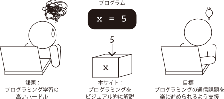
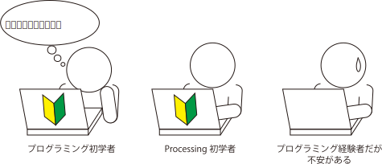

本サイトの目的
本サイトはムサビ通信生向けのプログラミング学習サイトである。 デザイン基礎IIAの程度の課題をスムーズに進められるようになることを目的とし、 プログラミング言語のProcessingを用いてプログラミングの学習をする。
こんな人が対象
本サイトの構成・利用方法
本サイトは「プログラミングの基礎」と「Processingの基礎」で構成される。自分のレベルにあった方から学習を進めていただきたい。
注意
本サイトは、武蔵野美術大学通信教育課程の課題として作成されたものです。内容には一部不正確な情報が含まれている可能性がありますので、あらかじめご了承ください。